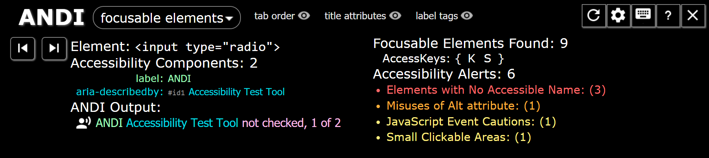

Get ANDI
ANDI Drag to your bookmarks toolbar.
Runs on desktop browsers:


Installation Help |
How to Show Bookmarks Bar
Meet ANDI.
ANDI (Accessible Name & Description Inspector) is a free accessibility testing tool.
ANDI is a "favelet" or "bookmarklet" that will:
- Provide automated detection of accessibility issues
- Reveal what a screen reader should say for interactive elements (the accessible name computation)
- Give practical suggestions to improve accessibility and check 508 compliance
Installation Help
Select your browser below for details.
Chrome

To show the Bookmarks Bar in Chrome, press Ctrl + Shift + B.
To Install ANDI on Chrome using the keyboard:
- Press Ctrl + Shift + O to bring up Bookmark Manager.
- Select the kebob menu button (three vertical dots) in the top right of the Bookmark Manager to open a context menu.
- Select "Add New Bookmark".
- Name the bookmark "ANDI".
- Copy and paste the ANDI JavaScript URL:
- Press Save.
Edge
To show the Favorites Bar in Edge (Chromium), press Ctrl + Shift + B.
To Install ANDI on Edge (Chromium) using the keyboard:
- In the Edge address bar, navigate to: edge://favorites/
- Select "Add Favorite" button.
- Name the bookmark "ANDI".
- Copy and paste the ANDI JavaScript URL:
- Press Save.
Firefox

To show the Bookmarks Bar in Firefox, Press (Alt + V), select Toolbars, then "Bookmarks Toolbar".
To Install ANDI on Firefox using the keyboard:
- Right click this link Ctrl + Shift + F10: ANDI
- Select "Bookmark This Link"
Internet Explorer

To show the Favorites Bar in Internet Explorer, Press Alt + V, select Toolbars, then "Favorites Bar".
To Install ANDI on Internet Explorer using the keyboard:
- Right click this link Ctrl + Shift + F10: ANDI
- Select "Add to favorites bar"
Safari

To show the Favorites Bar in Safari, Press Command + Shift + B.
Unfortunately, Safari does not offer a simple keyboard accessible alternative to set a JavaScript favelet link as a favorite.
Launch ANDI
Launch ANDI by clicking on the favorite/bookmark labelled "ANDI" that was added to the Favorites/Bookmarks Bar in the browser's toolbar. ANDI will analyze the test page and appear on the page.
For thorough documentation of all features, visit: ANDI's User Guide.
Looking for a site to demo ANDI? Visit our demonstration page.
Benefits of ANDI
ANDI is like having an expert at your side, helping you ensure your website is meeting accessibility standards. Include ANDI in screenshots during your manual accessibility review. Use ANDI during development to help you build accessible websites.
Whether you're an accessibility expert or you're new to Section 508 compliance, ADA compliance, or WCAG standards, you should definitely check out ANDI.
Updates
No need to reinstall or upgrade. ANDI updates itself automatically.
View ANDI on GitHub to see version history.
How To Uninstall
To uninstall ANDI simply delete the favorite/bookmark that was created in installation.
Open Source on GitHub
ANDI is an open source project created by the Accessible Solutions Branch of the Social Security Administration. The source code is available for contribution on GitHub.
If your organization wishes to host a local instance of ANDI, the accessibility testing tool, refer to this guide.